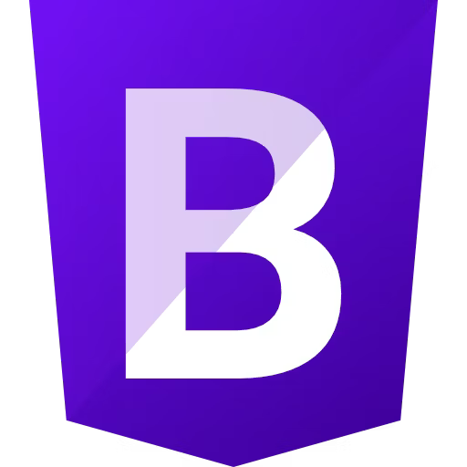

Skills

Java/JavaFX

C/C++

C#

SOAP

HTML

CSS

JavaScript

Bootstrap
Turning caffeine into code since 2021!
As a junior majoring in Computer Science and minoring in Business at Arizona State University, with aspirations in Quantitative Finance, I am deeply passionate about the intersection of mathematics, data, and finance. My coursework and extracurricular pursuits reflect my commitment to mastering programming, data analysis, and statistical modeling. With an eye towards my future in Quantitative Finance, I aim to blend my technical skills with a keen understanding of financial markets to drive innovative solutions and insights.
Java/JavaFX
C/C++
C#
SOAP
HTML
CSS
JavaScript
Bootstrap
Aug 2019 - Mar 2020
Oct 2021 - May 2022
Aug 2023 - Dec 2023
May 2022 - Present